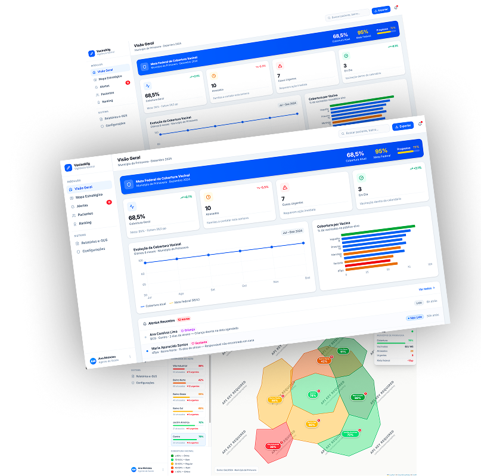
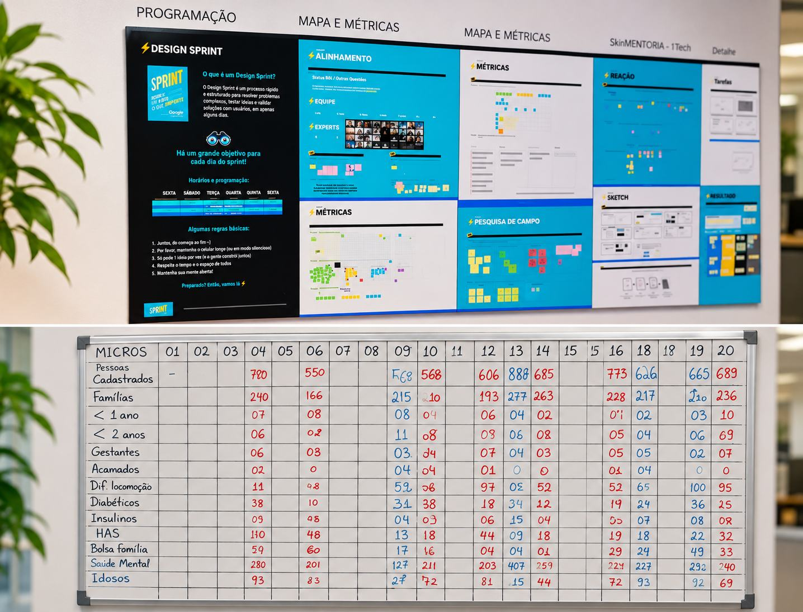
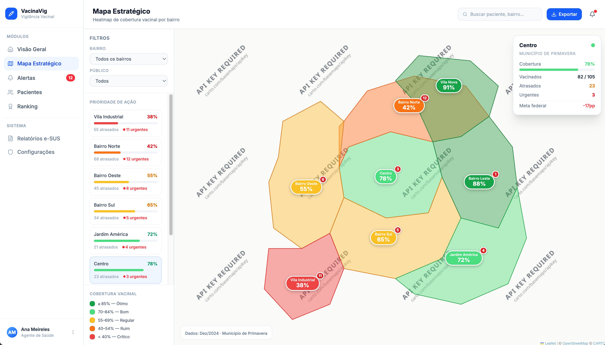
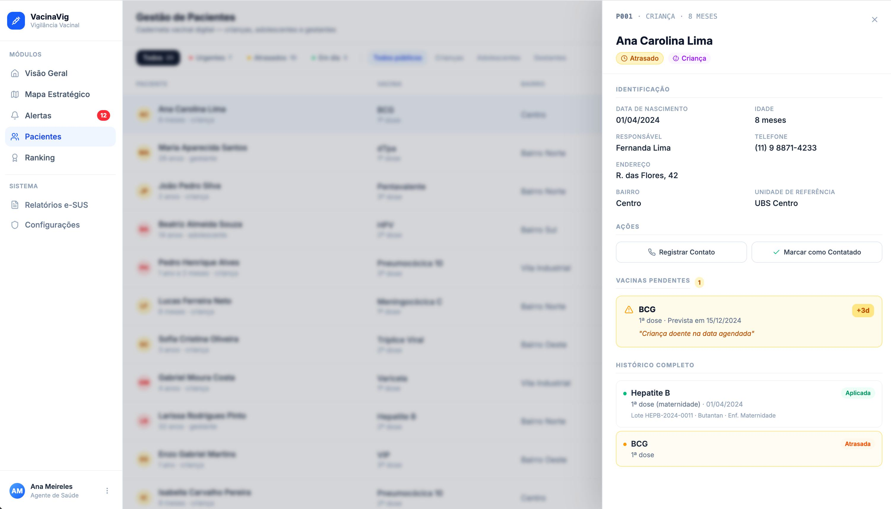
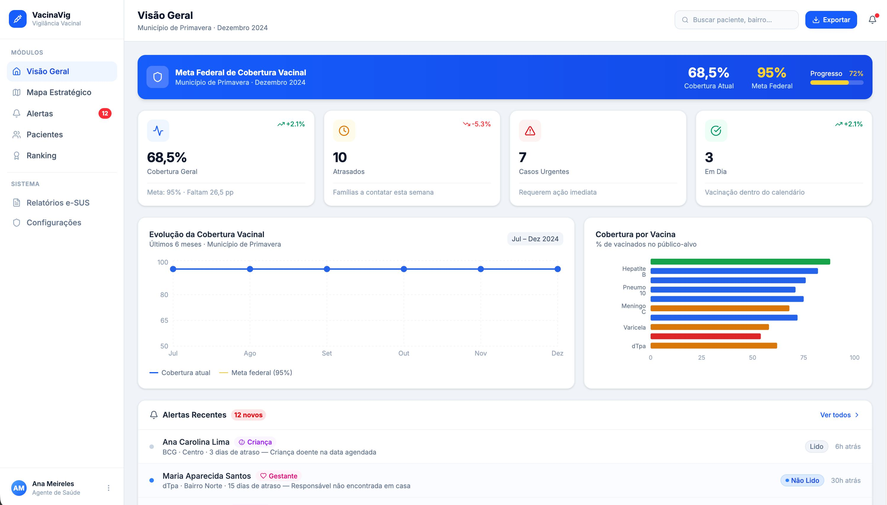
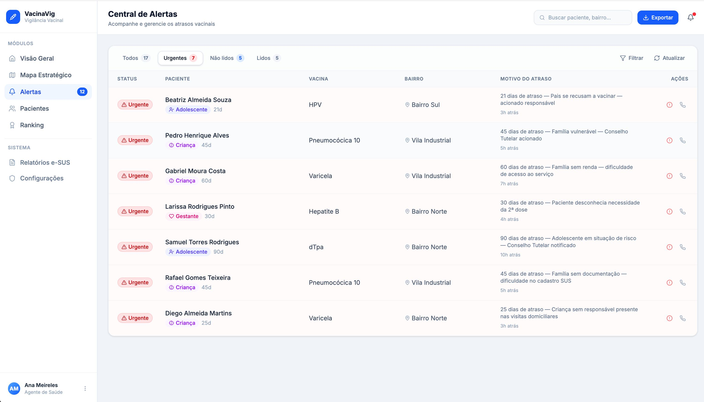

Vacinação infantil:
dados que orientam ações
Facilitei um Design Sprint e apoiei a evolução de uma solução para ajudar agentes de saúde a acompanhar a vacinação infantil em campo.

Aproximamos a solução da rotina de agentes e gestores de saúde para apoiar o monitoramento da vacinação em Tarumã.
O acompanhamento era feito manualmente, com listas de crianças com doses em atraso. As informações eram cumulativas e não ofereciam histórico ou comparação clara. A equipe precisava investigar dados faltantes e diferenças entre os registros locais e os enviados ao e-SUS.
Na prática, o acompanhamento envolvia diferentes pessoas: a enfermagem identificava atrasos, agentes comunitários visitavam famílias e gestores acompanhavam indicadores e consolidavam informações.
A DIREÇÃO ESTRATÉGICADesenhar para a rotina completa do monitoramento vacinal
O desafio era compreender como agentes de saúde e gestores trabalhavam para criar uma solução que se encaixasse nessa rotina. A tecnologia precisava conectar o histórico vacinal, a identificação de situações prioritárias e a visão da cobertura no território.
Duas equipes, um desafio compartilhado
Facilitei duas sprints remotas com equipes trabalhando simultaneamente, conduzindo o processo pelas etapas de mapear, rascunhar, decidir, prototipar e testar. O Sprint reuniu diferentes perspectivas e ajudou a explorar soluções para as necessidades de quem acompanha a vacinação no dia a dia.


Das necessidades da rotina às oportunidades de produto
Com as prioridades definidas, trabalhei em conjunto com a equipe da Ideativo Design no desenvolvimento da solução. A caderneta organiza as informações de vacinação de cada criança; o mapa oferece uma visão territorial da cobertura; e os alertas ajudam as equipes a identificar situações prioritárias.
Três funcionalidades conectadas à rotina da saúde
O produto foi pensado para apoiar o trabalho dos agentes no território e a gestão dos indicadores pela Secretaria.
Caderneta de vacinação
Reúne o histórico de vacinas e ajuda a identificar doses aplicadas e pendentes.

Mapa de cobertura vacinal
Permite acompanhar os indicadores por território e visualizar áreas que precisam de atenção.

Alertas de casos urgentes
Destacam atrasos e situações prioritárias para apoiar o acompanhamento pelas equipes.

Mais visibilidade para acompanhar a vacinação no município
O projeto levou o monitoramento de um processo manual para uma solução digital voltada às rotinas de agentes e gestores. No piloto em Tarumã, a cobertura vacinal passou de 53% para 56%. O resultado é descrito como preliminar.
Para digitalizar um serviço, é preciso entender como o trabalho acontece
O Sprint ajudou a revelar as necessidades por trás dos registros. O desenvolvimento com a Portal Telemedicina transformou esses aprendizados em funcionalidades para acompanhar a vacinação e apoiar ações no território.